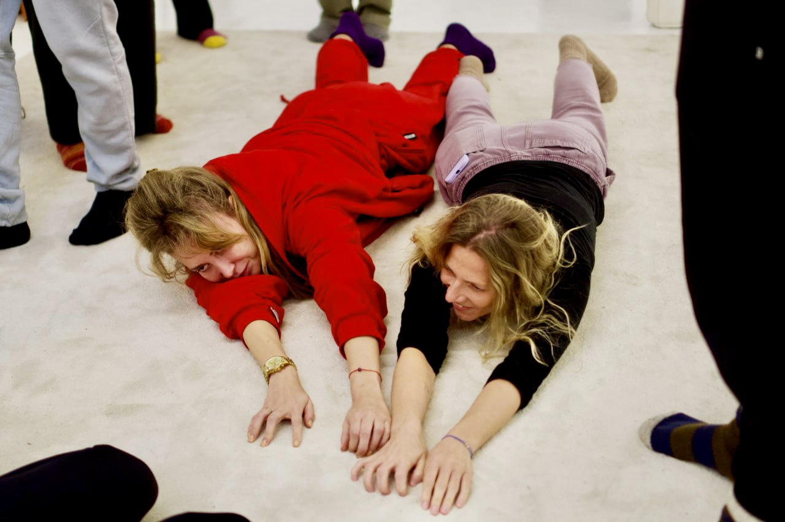
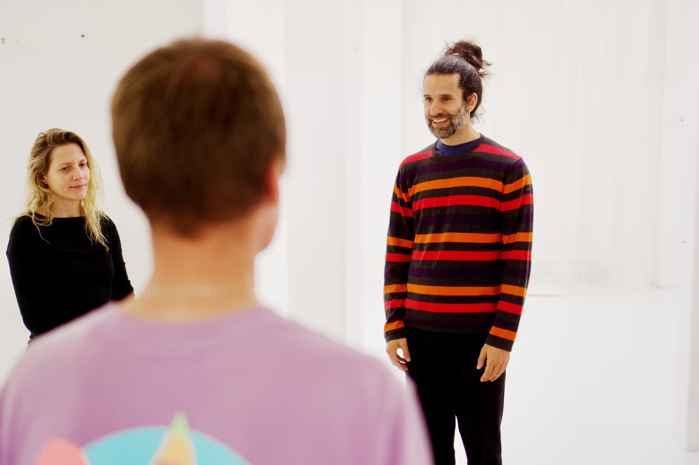
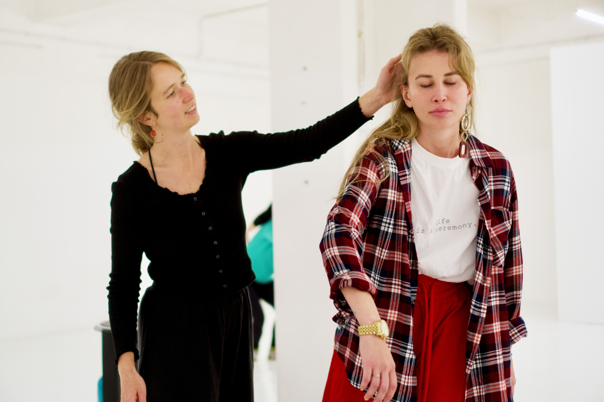
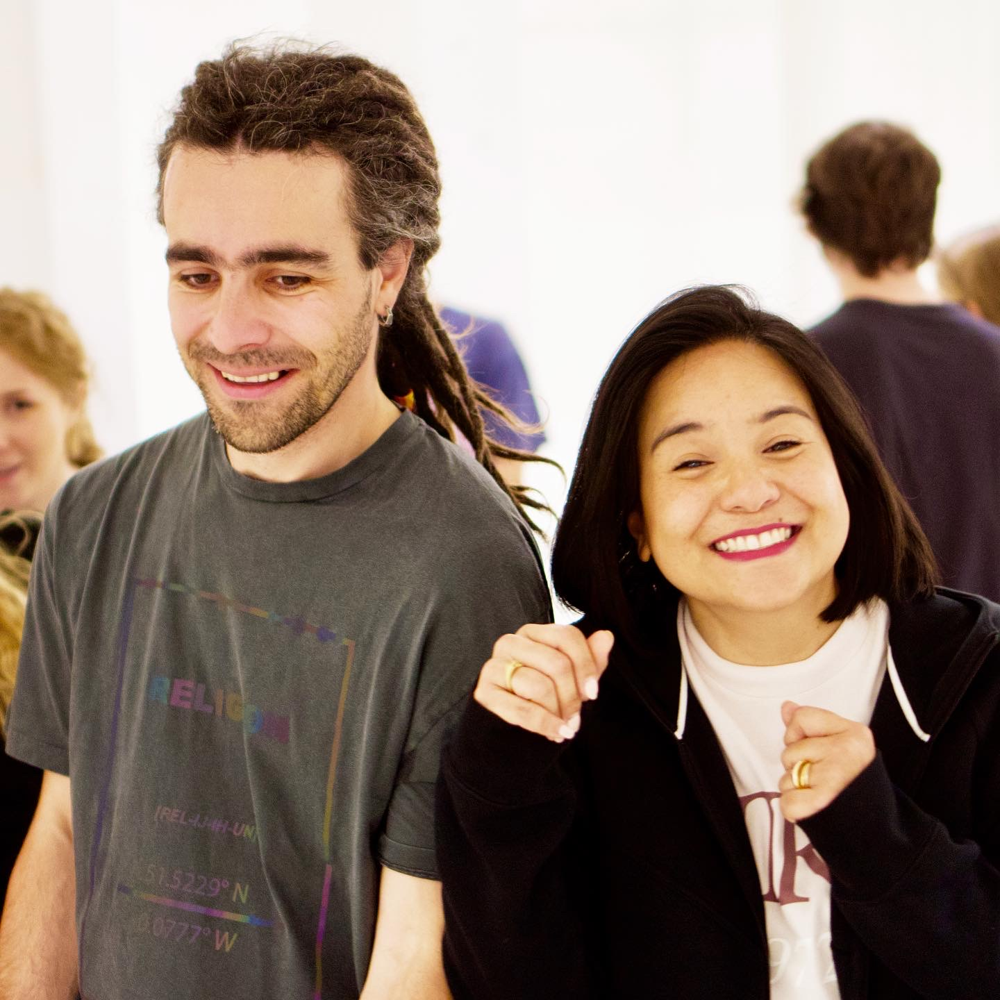
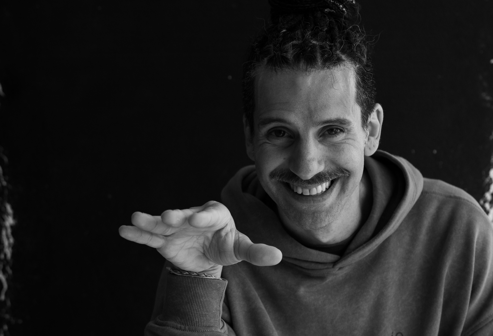

Presence
Learn to notice how you are in the moment and act from it.
Two days with Pedro Fabião
A workshop on presence, authenticity and human connection, through the art of clowning.
* A version of personal work fuelled by pure fun and aliveness.
Why this workshop
Many of us get very good at thinking, planning and managing ourselves. We check how we're coming across. We swallow the impulse before it reaches the room. We keep the difficult feelings private. It works. You stay in control, you stay good, correct, easy to be around.
But something quietly gets filed away with it - we lose touch with our bodies, our spontaneity and the parts of us that feel most alive. Mistakes start to feel expensive. Playing gets harder. And meeting another person - really meeting them - starts to feel like something you once knew how to do.
Being Before Doing is an invitation to experience something different.
Learn to notice how you are in the moment and act from it.
Rediscover spontaneity, joy and freedom without performance.
Build deeper contact with yourself and others through authenticity.
About the workshop
The underlying idea of the workshop is simple: the clown in you is you amplified.
Whatever your idea about clowning is, be ready to be surprised. It isn't a red nose and a funny walk or a silly voice. It's closer to the opposite: taking things off, until what's left is yours - your impulses, reactions, emotions, rhythms, hesitations, mistakes and the particular way you meet the world.
The exercises are designed to notice these qualities and give them more space. The aim is not to make you into someone else, but to make your own way of being more visible, expressive and alive.
What it's really about is connection, with yourself and from that place - with the people in the room.
The secret ingredient is the state of play.
Play softens our natural defences. It brings more pleasure, spontaneity, curiosity and openness to what we do not yet know - in ourselves, in the moment and in other people.
We explore this through games and guided exercises using movement, breath, voice, eye contact and improvisation - alone, with partners and with the whole group.
What can be expected
How it works
Everything is practical and rooted in lived experience, not abstract theory. We work from what is happening in the room and let the real felt experience guide the process.
Transformation requires risk. We learn to meet mistakes, embarrassment, and uncertainty without collapsing into self-judgment, so freedom and creativity can expand.
Practices are designed to help you act from a real impulse, respect your boundaries, and stay connected to your sensitivities, instincts, and inner resources even in bigger challenges.
We explore the stretch between comfort and overload: enough challenge to grow, but not so much tension that your system shuts down. This is where new choices can appear in real time.
Play lowers our defences, increases trust, and lets us experiment without taking ourselves too seriously. It is one of the most powerful ways to create transformation.
Workshop moments




A closer look at the atmosphere, play and human connection inside the room.
Watch on YouTubeReviews
“It wasn’t about being funny. It was about letting go of control and discovering what is real, raw and alive inside.”
Read more
“I went in with a strong fear of being seen and feeling awkward. I expected a performance exercise. Instead, I discovered something much deeper: there are moments when surrendering control creates honesty, brightness and a huge emotional release. The workshop helped me understand that my energy was being spent on trying to appear more polished, not on being fully alive. By the end, I felt as if old blocks had been cleared, and I understood that my real power is not in being careful — it is in allowing myself to be present, messy, expressive and honest.”
“For me it became a deep reset: warm, playful, emotional, and surprisingly transformative.”
Read more
“The workshop was a rare combination of ease and intensity. It gave me permission to feel more authentic and less guarded. The atmosphere was so warm and open that I could laugh freely, cry honestly, and connect with people in a way that felt real instead of curated. It was also a practical reminder that inner clown energy is not just about theatre — it is a way of being more expressive, more spontaneous, and more connected to your body and your instincts. I left with a full heart, a tired voice, and a strong sense that I had touched something important in myself.”
“I understood that making mistakes is a way to feel alive. That alone changed how I relate to myself.”
Read more
“I spent years being careful, guarded, and afraid of being judged. I’m used to performing in a polished way, even when it feels fake. Pedro’s workshop was the first time I felt the opposite: that risk can be playful, that being imperfect is not a threat but a doorway, and that real life is often more alive in those vulnerable moments. I laughed until my stomach hurt, and I also saw parts of myself that I usually keep hidden. It changed my relationship with fear. It reminded me that freedom begins when you stop taking yourself so seriously.”
Meet Pedro
Pedro Fabião has spent years training hospital clowns and actors around the world - hospital clowning being a profession that runs almost entirely on sensitivity and empathy. For years he directed Operação Nariz Vermelho, Portugal's hospital clown organisation.
He is also a psychologist, trained in psychodrama. The two halves aren't kept in separate rooms. The work is helping people find and express what's actually in them, and go gently through whatever is in the way.
His approach is playful, embodied and based on humour. Which doesn't keep difficult emotions away - and when they arrive, the work is finding what lets you say yes to the experience, so that something can move.
Hospital clowning is a profession that runs almost entirely on sensitivity and empathy.

How Pedro teaches
Transformation, growth and learning require accepting mistakes. We work with whatever each participant already does with theirs, so you can risk more.
Practices rooted in a real impulse, respecting your boundaries, following your own sensitivity - learning to stay safe in bigger challenges by distinguishing safety from comfort.
Play opens us to transformation by lowering our defences and increasing trust. It also builds one remarkable skill: not taking ourselves so seriously.
He teaches in more than 25 countries and has worked with Google, McKinsey, Columbia Business School EMBA, Skolkovo, NetJets, Red Nose International and The Humour Foundation, among others. He is a member of the Artistic Council of the Theodora Foundation.
No. Most people arrive with none.
No. Humour is not something you have to produce here - it often appears when things do not go as planned.
Yes. The workshop is one continuous two-day process. The second day builds on what happens during the first, and the consistency of the group helps create a safe working space.
Comfortable clothes you can move in, indoor shoes or bare feet depending on the venue, water, and something for the breaks.
There is a one-hour break in the middle of each day. You can bring food or visit one of the nearby cafés.
Up to and including 15 September, you can have a full refund or move your payment to a future workshop. From 16 September, if we manage to fill your place, half the fee is refunded or transferred. If the place stays empty, we can't refund it - with a group of sixteen, a place that opens late usually stays open.
Workshop fee
Available until 15 September
From 16 September
Places are limited. Your booking is confirmed once payment has been received.